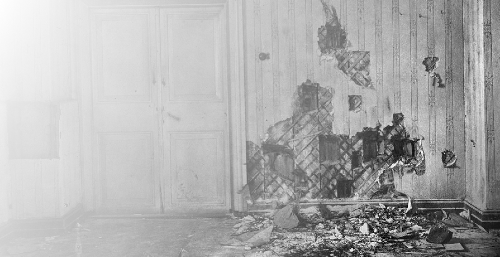

Семью Романовых разместили в «доме особого назначения» - реквизированном особняке военного
инженера в отставке Н. Н. Ипатьева. Именно в этом доме семья провела свои последние 78 дней.
В 1:30 ночи с 16 на 17 июля к дому прибыли грузовики для перевозки трупов. Юровский, комендант дома, перевел
семью Николая II в подвальное помещение. Позжнее Юровский ввел в подвал расстрельную команду и зачитал приговор.
Николай II успел сказать лишь «Что?» и раздались хаотичные выстрелы.
В итоге расстрела погибло 7 членов семьи: Николай, Александра, Ольга, Мария, Анастасия и Алексей, а также
4 слуг: Евгений Боткин, Иван Харитонов, Алексей Трупп и Анна Демидова.
